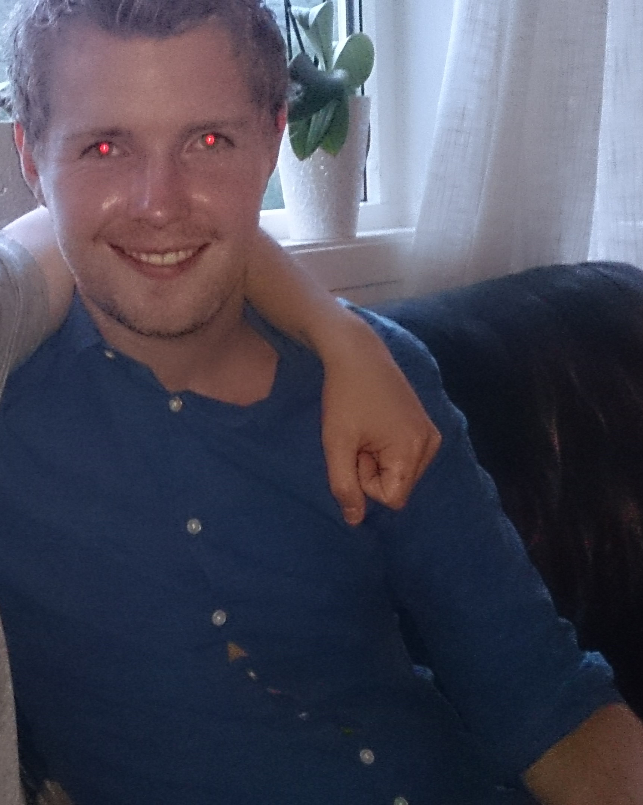

| Hallvard Kobbeltveit | |
|---|---|
|  | |
| Alder | 24 år |
| Hjemby | Bergen |
| Github | h182040 |
Velkommen til mi side
Eg er 24 år gammel og kjem frå Sotra, ei øy om lag 15 min frå Bergen. Etter at eg vart uteksaminert frå Sotra vidaregåande skule i 2011 har eg gjort litt av kvart. Eg har mellom anna vore eit kaldt år i militæret der eg vart stasjonert i Skjold leir i Nord-Norge. I tillegg har eg studert litt jus og historie på uib. I fritida mi ser eg på, og spelar sjølv ein del fotball. Eg held med Liverpool FC og speler sjølv på Nubben FK i 7. divisjon. I tillegg speler eg ein del dataspel.
Eg har ikkje særleg mykje erfaring innanfor programmering, bortsett frå at eg tok IT1 og IT2 på vidaregåande. Der lærde eg litt programmering i flash, om databasar i access og heimesider i frontpage.